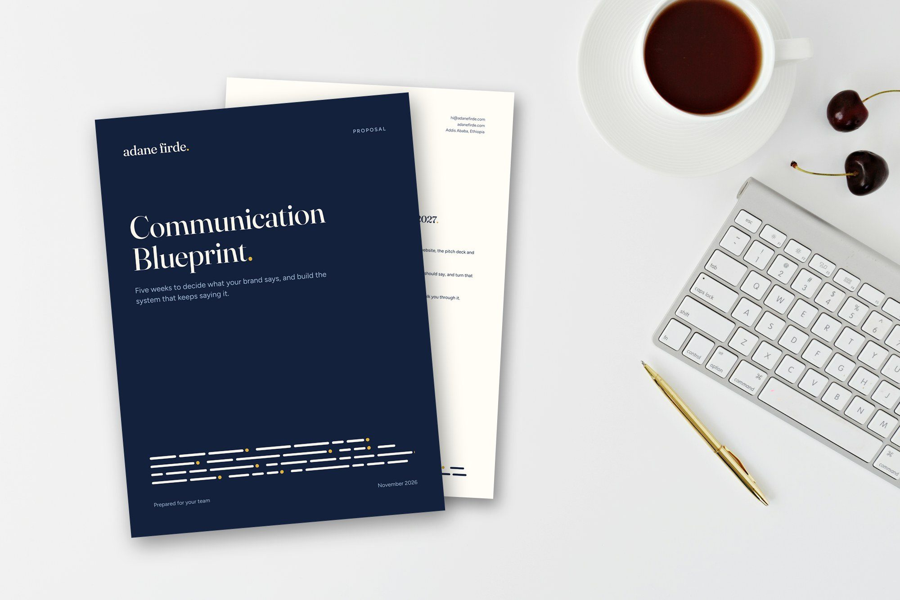
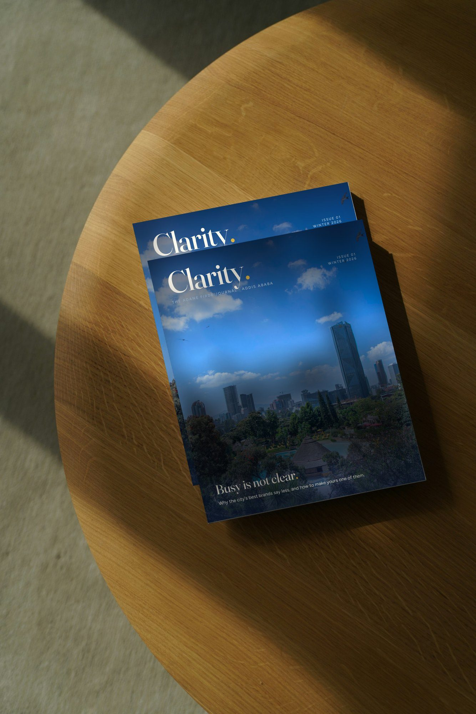
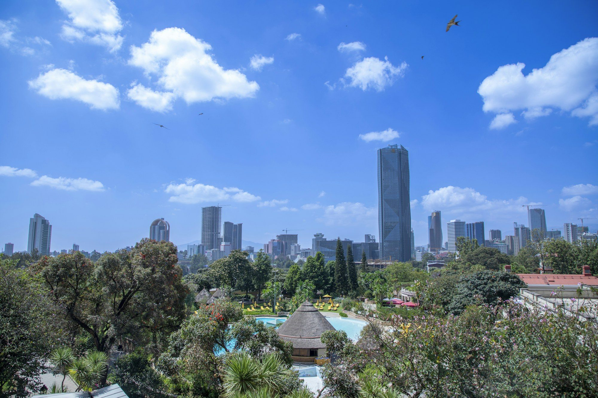
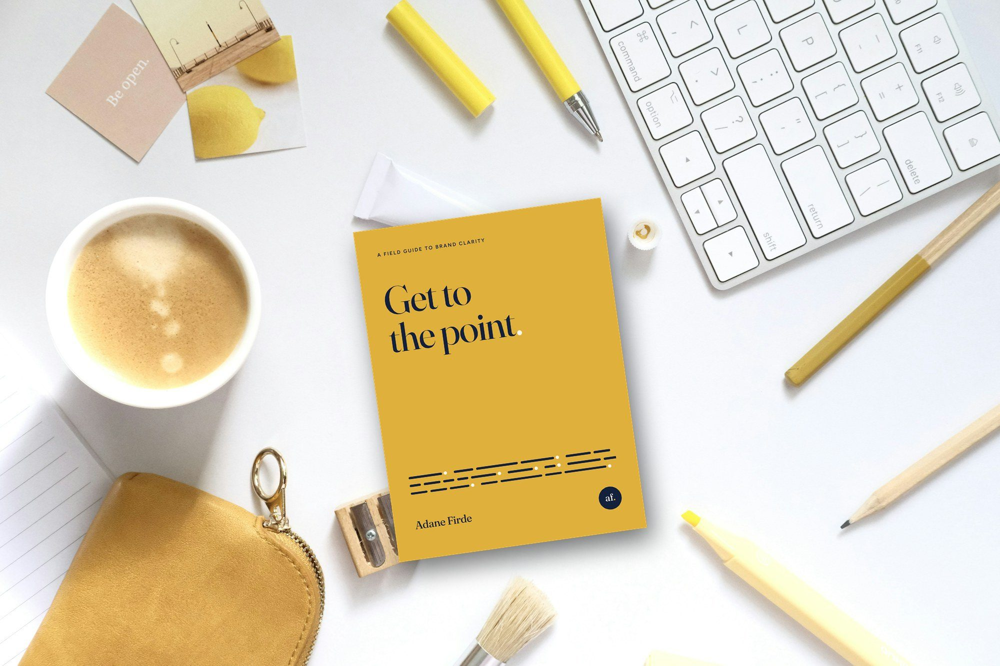

Prices, in Birr,before we talk.
Every price is published. Two tracks and a retainer: Sharpen for brands that exist, Build for brands starting out. Every project begins with one 90-minute session.
Begin with a Strategy Session.
Br 20,000
Ninety minutes, online or in Addis Ababa. We look at where the brand is, decide what to fix first and agree the right next step, whether or not that is working with me.
The fee is credited in full if you start a project within 30 days.
Book the sessionSharpen what exists.
For brands that already say something, but say too much, too little or too many different things.
| Service | What it is | You leave with | From |
|---|---|---|---|
| Audit.6 working days | A close look at everything the brand says today: website, social, decks and how your team describes the work. |
| Br 120,000 |
| Strategy.2 weeks | We decide your position, your audience and the one message, and write them down so everyone can use them. |
| Br 225,000 |
| Content & Social System.2 weeks | The strategy turned into a content plan your team can run every week without asking. |
| Br 190,000 |
| Communication Blueprint.5 to 6 weeks | Audit, strategy and content system in one engagement, for organisations with several audiences or channels. |
| Br 465,000 |



Build from nothing.
For new businesses, or brands with nothing worth keeping.
| Service | What it is | You leave with | From |
|---|---|---|---|
| Brand Starter.3 weeks | A first brand for a new business: a clear position, a logo direction and the basics to launch. |
| Br 95,000 |
| Brand Foundation.6 to 7 weeks | A complete brand from the ground up: strategy, identity, voice and guidelines. |
| Br 720,000 |


A strategist on call.
Two advisory days a month to keep the brand on course: reviews, briefs for agencies, and a decision when something new comes up.
from Br 145,000 a month
Two-month minimum. After a Sharpen or Build project.
Good to know.
- Feedback in 48 hours
- Each review round has a 48-hour feedback window, so the timeline holds.
- What “from” means
- The starting price for the scope described. Larger scopes are quoted after the session, in writing.
- Where we meet
- Online, or in person in Addis Ababa. Monday to Friday, Addis Ababa time.